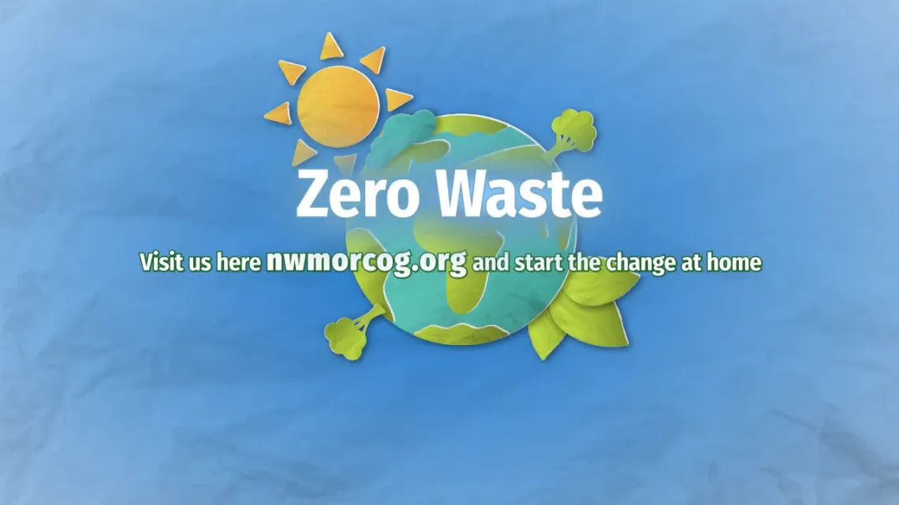

The Northwest Missouri Regional Solid Waste Management District, Region A, serves the same five-county region as the Regional Council, providing local communities and governments easy access to waste reduction technical services. It is one of twenty Solid Waste Management Districts operating with uniquely different funding levels, board structures, administrative organization, geographic size and demographics. District oversight is provided by the Missouri Department of Natural Resources' Solid Waste Management Program.
Regional Council staff members provide administration, education, and implementation of the Northwest Missouri Regional Solid Waste Management Plan. The Solid Waste Management District is directed by local leaders appointed to participate on the Full Council, Executive Board and Advisory Committee. For each Grant Call the Executive Board evaluates and ranks grant applications to award grant funds for community projects. Funds can be used for various projects to divert waste, create opportunities for recycling, new market research and development, to collect and process compost, and recycling education. The goal is to encourage everyone to “reduce, reuse & recycle.”
Reduce the amount of solid waste entering the landfill.
Promote the reuse of products and materials in the district.
Promote and assist the implementation of recycling projects throughout the region.
Encourage local governments and citizens to get involved in compost programs.
Encourage proper disposal techniques and provide infrastructure for waste management.
Collaborate with local governments and solid waste service providers to ensure safe and sanitary management and compliance of solid waste regulations.
Support disposal of special wastes.
Provide public education to citizens of the region through multiple outlets.
Region A operates with a Full Council and Executive Board comprised of community leaders representing each county and cities with a population over 500. They meet on a regular basis; Full Council semi-annually and the Executive Board monthly. These two groups oversee all activities of the district, governed both by bylaws and Missouri state law.